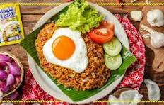

SELAMAT DATANG DI RESTORAN KAMI

Nasi Goreng
Nasi goreng adalah makanan berupa nasi yang digoreng dan dicampur dalam minyak goreng, margarin, atau mentega. Biasanya ditambah dengan kecap manis, bawang merah, bawang putih, asam jawa, lada dan bahan lainnya; seperti telur, daging ayam, dan kerupuk.
Sate

Sate adalah makanan yang terbuat dari daging yang dipotong kecil-kecil dan ditusuk sedemikian rupa dengan tusukan lidi tulang daun kelapa atau bambu, kemudian dipanggang menggunakan bara arang kayu. Sate disajikan dengan berbagai macam bumbu yang bergantung pada variasi resep sate.
Bakso

Bakso adalah jenis bola daging yang lazim ditemukan pada masakan Indonesia. Bakso umumnya dibuat dari campuran daging sapi giling dan tepung tapioka, tetapi ada juga bakso yang terbuat dari daging ayam, babi, ikan, udang, kambing, bahkan daging kerbau.